Recording Studio
如何在保证原声还原的基础上
塑造出好听的声音
从一间录音室的分工，追问“保真”在哪一步被决定
01起于一个日常
兴头来了想唱两句，或录一段话。手机一录、回放一听：杂音多、声音干巴。
“能听出是自己，但不好听。”
于是一顿操作，混响、压缩、降噪全上。再听，除了不像自己，其它都挺好。
问题不在效果器：误差在拾音前就写进信号，算法无从分离。
02录音室的答案
录音间要“干”，控制室要“准”：一个要压掉反射，一个要保证听音位不被染色。两项要求在同一间房里互相冲突，所以拆成两间，中间用观察窗相连。
一窗之隔，其实是两套管不兼容的声学指标：这边看频响与反射，那边看隔离与本底噪声。
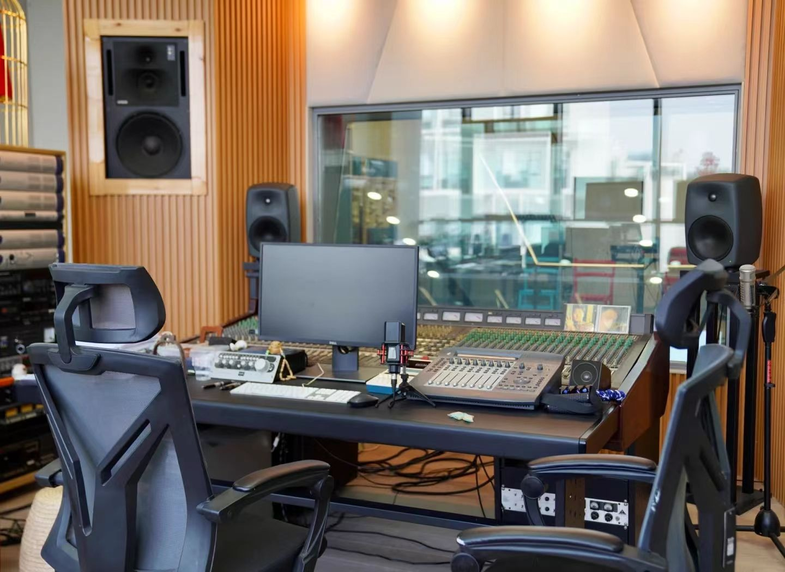
03第一间：录音间
录音间只做一件事：把你此刻的声音尽量完整、干净地留下来。话筒管直达声与信噪比，吸音管室内反射，隔音管外部噪声——三者各拦一类误差，谁也替不了谁。
钢琴、话筒架、可移动的吸音帘：改变的是室内声能的衰减，不是墙的隔声量。
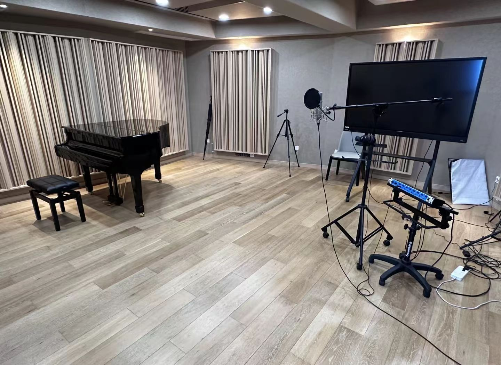
04拾音
话筒不只是把声音变成电信号：指向性与灵敏度决定它收进多少房间声。电容细节多，也容易收下远处反射；动圈耐高声压，适合贴嘴近录；防喷罩挡住“p”“b”的气流爆音。选的其实是“要多少房间”。［2］
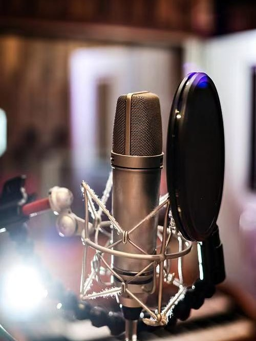
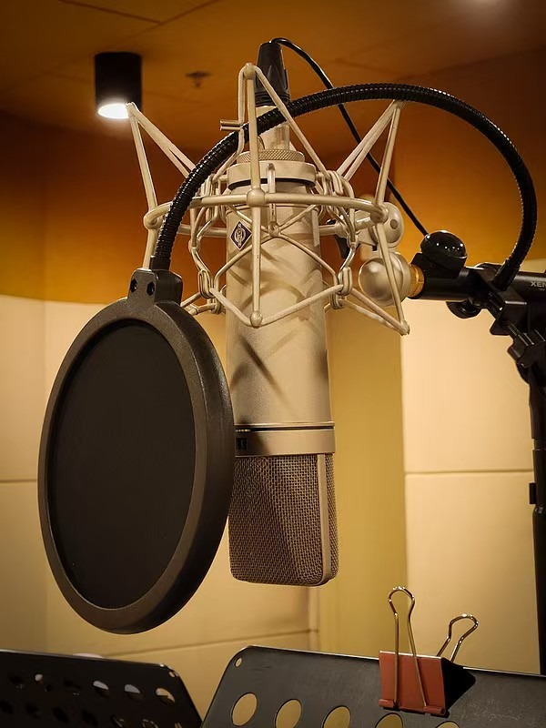
电容话筒 + 防喷罩 + 弹性支架：防喷罩挡气流，支架隔震动。
05房间的第一层
多孔材料靠空气在孔隙里摩擦耗能，主要吸中高频。要对 125 Hz 起作用，厚度得接近 1/4 波长（约 0.7 m）；铺再多层薄棉也没用，低频得交给共振吸声结构。这正是“吸音”最难的一段。
板后留出的空腔等效增加了吸声厚度，把有效频段往低频推——拼缝不只是装饰。
06房间的第二层
单层墙的隔声量大致遵循质量定律：面密度或频率翻倍，约多 6 dB。但真正决定结果的是最弱环节——门缝、窗框、线盒、声桥都会让声音绕过去，所以密封与结构断开比一味加厚更关键。［5］
观察窗是这套构造里最薄的一环：玻璃再厚，边框没断开就等于给声音留了条短路。
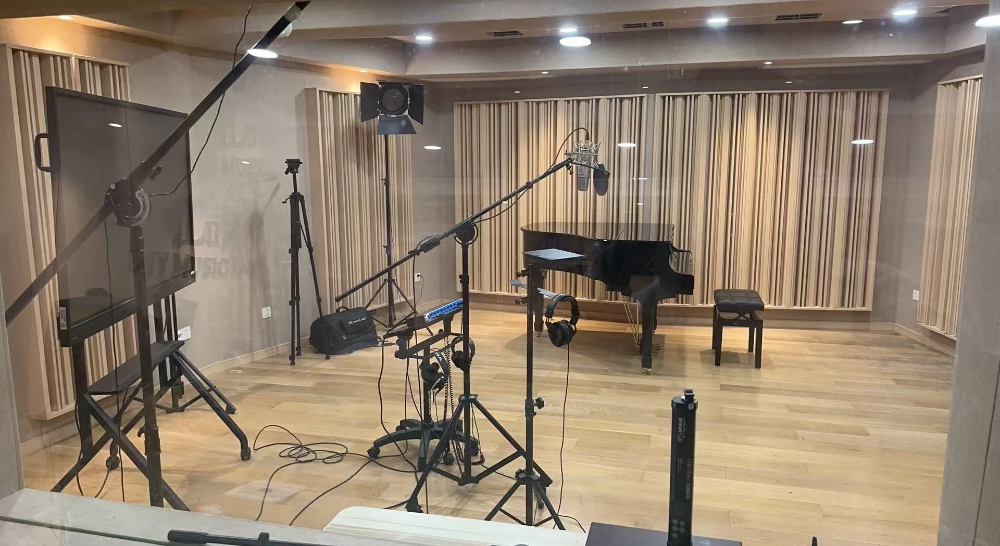
07最容易混的两个词
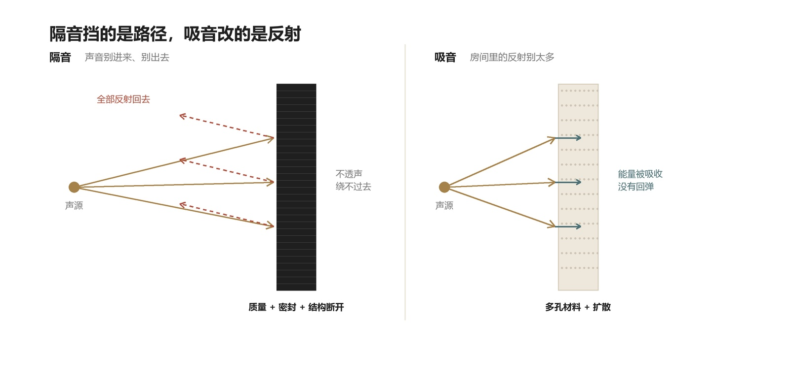
A 增大不改变 R：铺满吸音棉，隔壁的说话声照样穿墙；墙再厚，屋里的回声也不会变短。［3］
“一个管挡住多少，
一个管留下多久。”
RT60 是声源停止后衰减 60 dB 的时间。赛宾公式 T ≈ 0.161 V / A 表明它由体积与总吸声量共同决定，不是能单独调到的数；吸声系数随频率变，各频带 RT60 并不相同。［4］
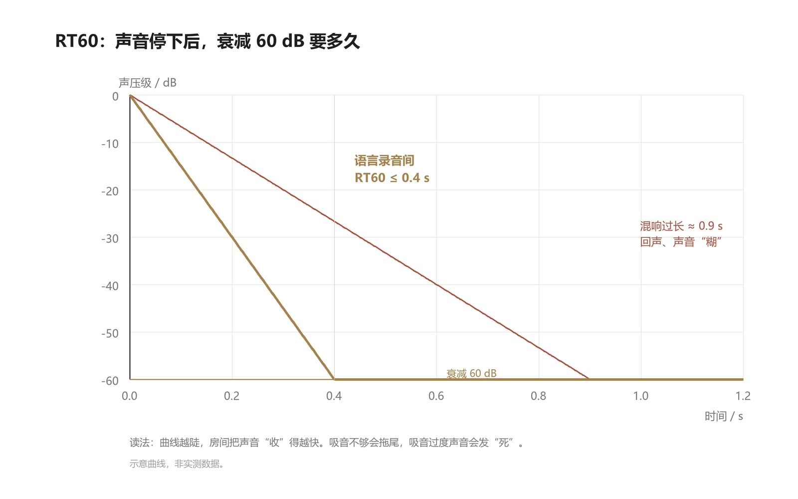
曲线越陡，衰减越快；小房间低频由驻波模态主导，公式在此失效，须分频带实测。［6］（示意图）
控制室的任务不是“听着舒服”，而是给出可复现的参考：录的时候判断有没有录坏，混的时候判断改得对不对。一旦房间把判断染了色，之后所有处理都在补偿一个并不存在的缺陷。
调音台、近场监听、观察窗排成一条动线，终点是一个不被房间干扰的听音位。
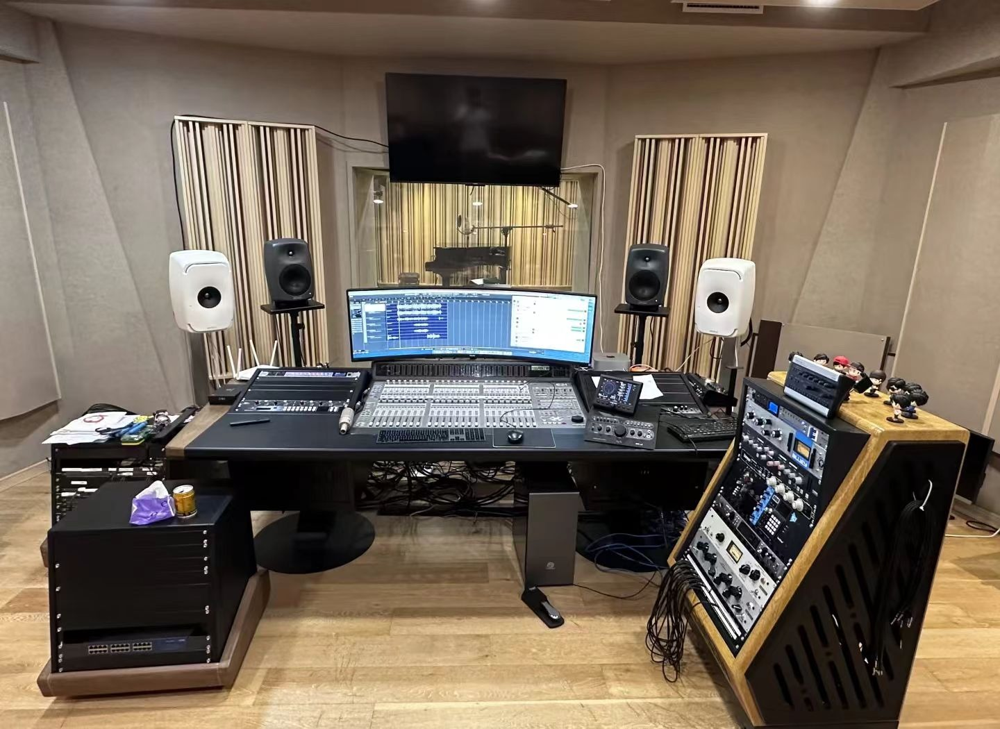
“准确”不只是频响平直，还包括指向性、瞬态与相位。摆位差几厘米，直达声与反射的声程差就变，低频响应跟着变。所以尺子要连房间一起校准，单看音箱参数没有意义。
正对听音位、中间无遮挡，是为了让先到达的只有直达声；这一步校准替代不了。
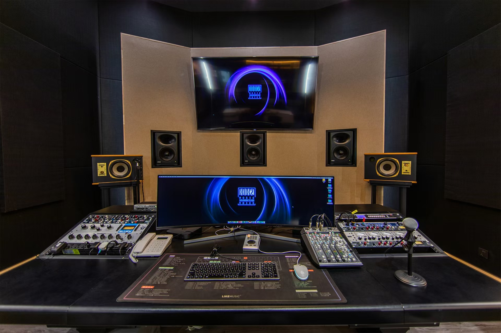
音频接口与调音台负责信号的转换、增益与分配：A/D 把连续波形变成采样序列，本身不判断好坏；真正的约束是增益结构与余量——电平选错，削波一旦发生，后面任何算法都拿不回被截掉的波形。
推子、EQ、总线是在已有信号上做分配与塑形；塑形能改比例，改不回采集时丢掉的信息。
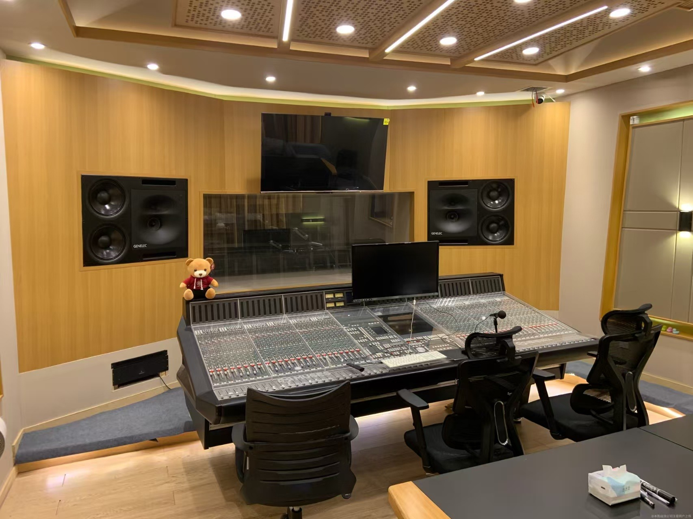
控制室把混响压到 0.2–0.3 s，并让音箱与听音位成等边三角形。更关键的是无反射区：直达声后 15–20 ms（约 5–7 m 声程差）内的强反射不会被听成回声，而是与直达声叠加成梳状滤波，改变频响与声像。［1］
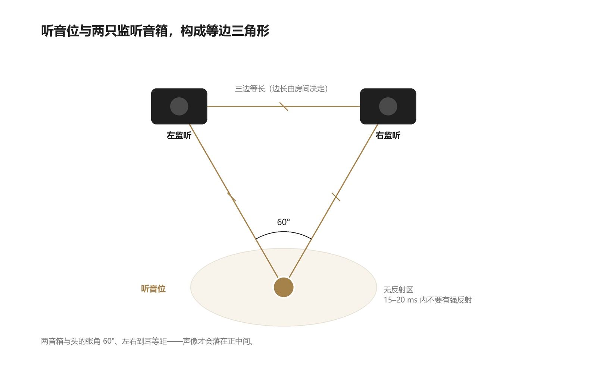
等边三角形 + 无反射区：控制室的“几何”。这种干涉随听音位移动而变，固定的 EQ 曲线补不了。
13控制室，不止一种
大台面、中控小桌、环绕工位……形态一直在换，判据却没换：等边三角、无反射区、分频带 RT60。技术演进的是工具，不是标准——设备越智能，越需要一个不被房间干扰的基准点。
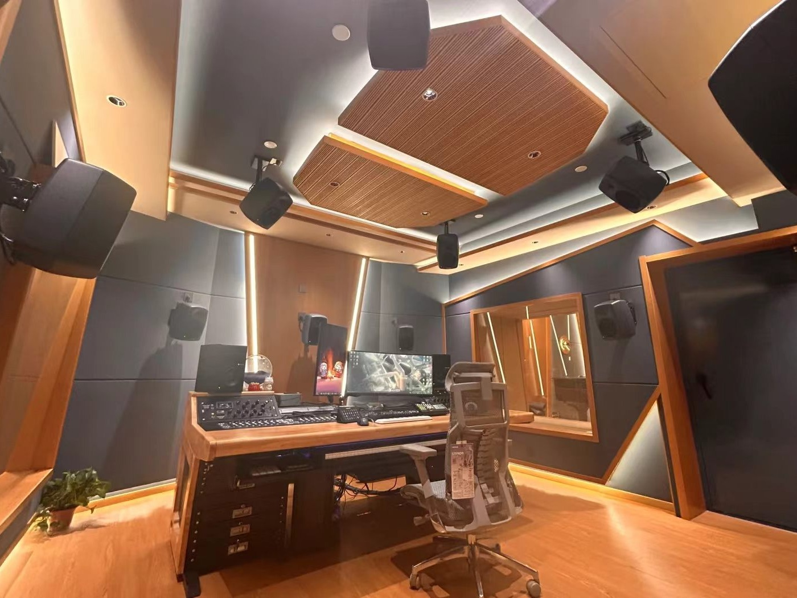
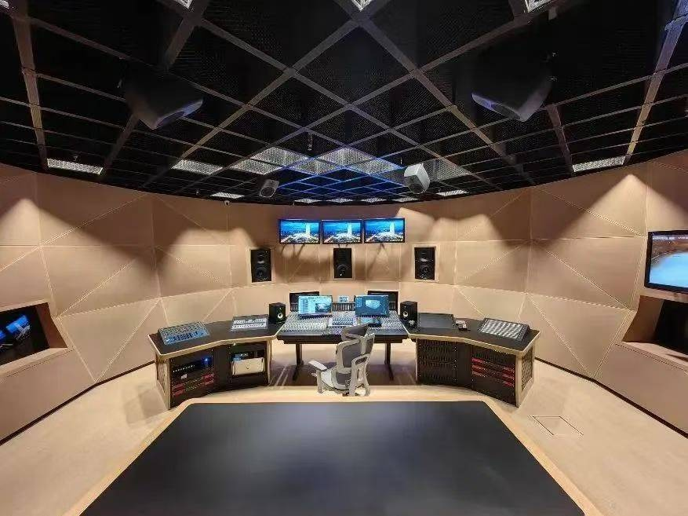
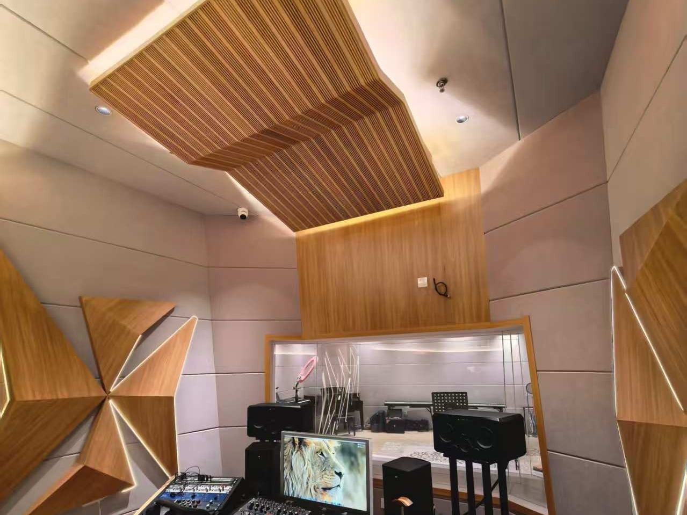
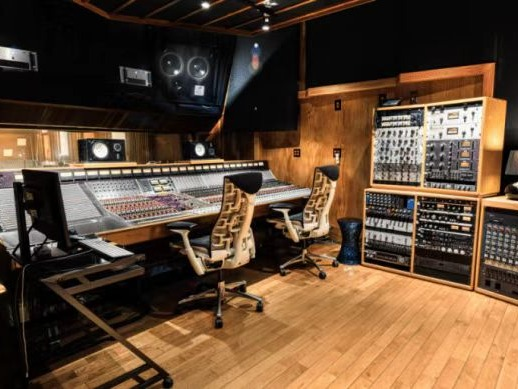
四种形态对应不同的房间尺寸与声道数，共同的约束都是：先让直达声可信。
14往回看
从广播时代的吸音墙，到今天可测可调的自适应声学处理，手段越来越“智能”。但算法能校正一个测点的幅频响应，改变不了声能衰减的时间过程，也追不上随位置变化的干涉——物理层的构造仍是前提。
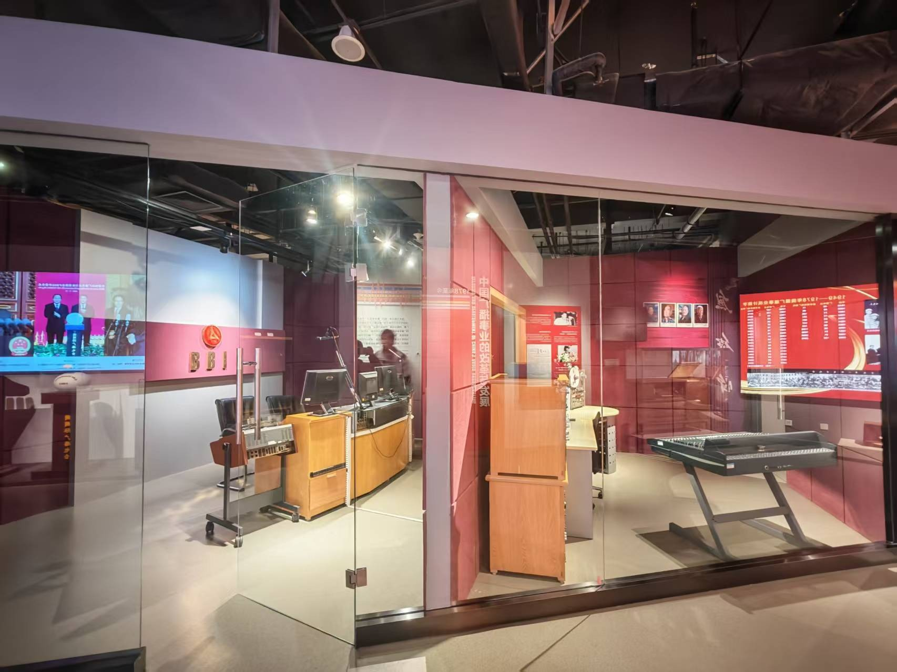
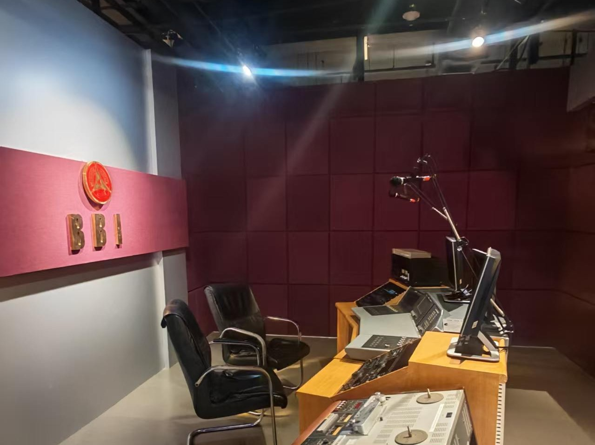
中国传媒大学传媒博物馆：玻璃柜里的老录音室，与红墙展区的广播时代复原工位。
15答案
两难拆开后，边界也清楚了：① 房间误差在拾音前就写进波形，算法无法分离；② 每个指标都有适用频带与测量条件；③ 算法能塑形，不能改写声场。“保真”先在物理层成立。
Studer A807 开盘机：磁带记下的，是一条已经被房间塑形过的波形。
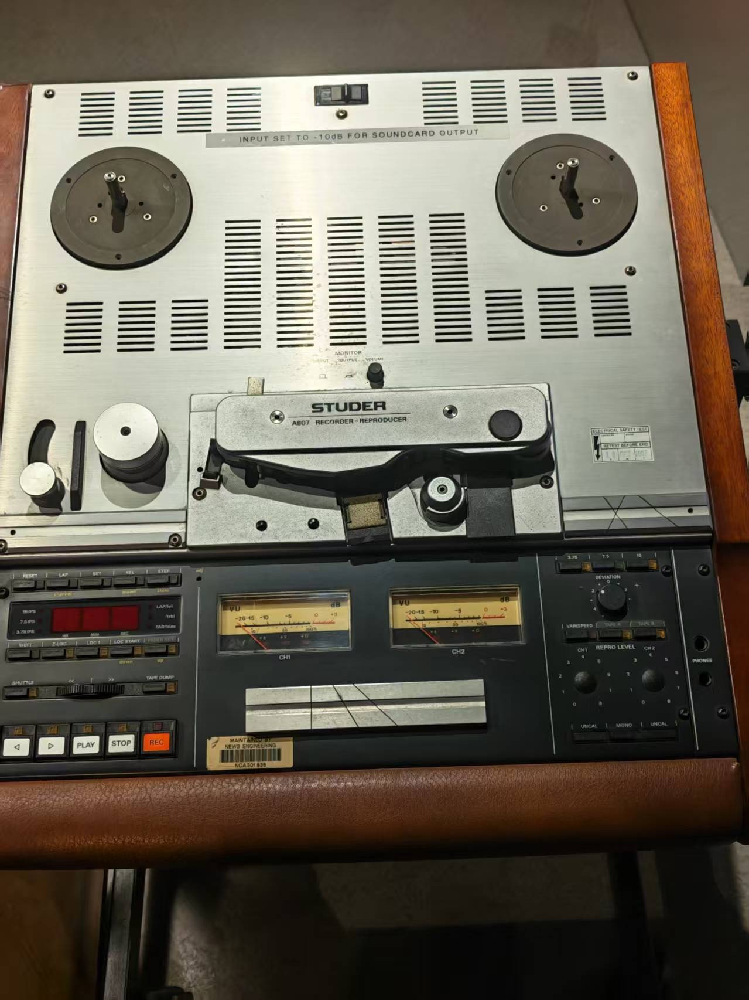
16附页